Il Project Match è pensato per la pianificazione di progetti di grande scala.
Consente di gestire più lastre contemporaneamente in modo da programmare tutte le lavorazioni necessarie per il progetto con una vista d’insieme.
/0.12.png)
/0.13.png)
Pannello di controllo
Premendo il pulsante sulla barra inferiore si apre un pannello tramite cui navigare all’interno della funzionalità.
Se si vuole accedere al Project Match, verranno mostrati questi pulsanti.
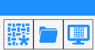
Nuovo progetto | |
/2.2-20250623-112446.png) | Carica progetto |
Visualizza anteprima |
All’interno di un progetto invece, il pannello dispone di pulsanti diversi.
/0.03.png)
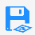 | Salva area di lavoro |
/2.7-20250623-114009.png) | Salva tutte le aree di lavoro |
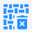 | Salva e chiudi progetto |
Nuovo progetto
Premendo il pulsante si apre una finestra che consente di creare un progetto per la macchia aperta multi lastra.
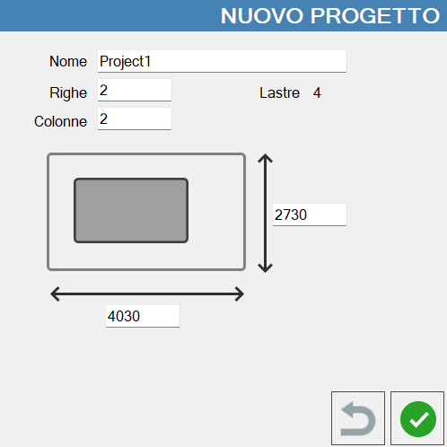
Nome | Nome con cui salvare il progetto. |
Righe | Permette di decidere il numero di righe del progetto. |
Colonne | Permette di decidere il numero di colonne del progetto. |
Lastre | Numero di lastre totali che il progetto può contenere. |
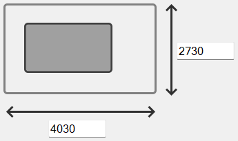 | Dimensioni area di lavoro |
Caricare un progetto
In questa schermata vengono mostrati i progetti salvati che è possibile aprire.
/0.05.png)
Chiudere un progetto
Si apre una finestra che consente di chiudere il progetto.
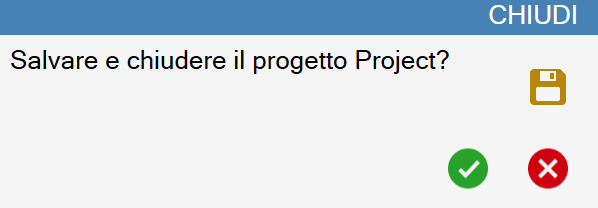
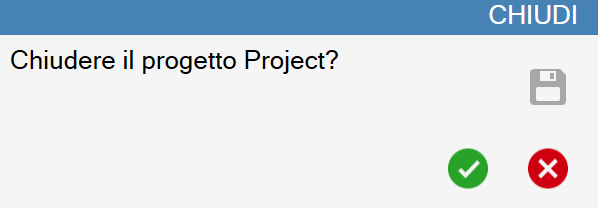
Per cambiare modalità di chiusura utilizzare il pulsante:
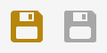 | Modalità chiusura |
Progetto
Un progetto è strutturato in righe e colonne, dove possono essere contenute le lastre.
In questa schermata è possibile inserire lastre all’interno del progetto, definirne i perimetri e posizionare i pezzi.
L’operatore può muovere i pezzi tra una lastra e l’altra a piacimento.
Zone di lavoro
Le zone di lavoro sono rappresentate dalle celle del progetto.
Ogni zona consente di gestire la lavorazione di una lastra, definendo un perimetro ed inserendo pezzi al suo interno.
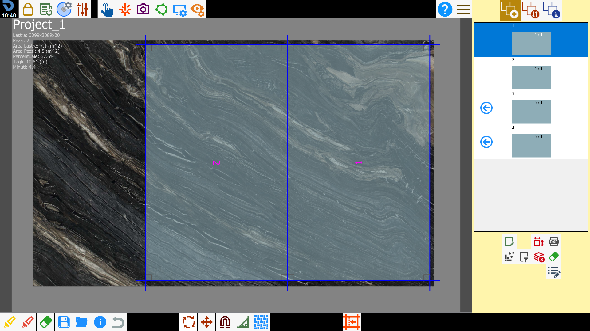
Nell’angolo in alto a sinistra di ogni zona di lavoro sono mostrate alcune informazioni.
Lastra | Dimensioni della lastra (larghezza x altezza x spessore). |
Pezzi | Numero di pezzi posizionati all’interno del perimetro. |
Area lastre | Area del perimetro della lastra. |
Area pezzi | Area dei pezzi posizionati all’interno del perimetro. |
Percentuale | Percentuale di area del perimetro occupata dai pezzi. |
Tagli | Lunghezza totale dei tagli da eseguire sulla lastra. |
Minuti | Stima del tempo, in minuti, che si impiega per eseguire il programma di taglio sulla lastra. |
Parametri progetto
All’interno del pannello dei parametri utente viene mostrata la sezione “Lastre“ tramite cui è possibile modificare alcune proprietà del progetto attualmente aperto.
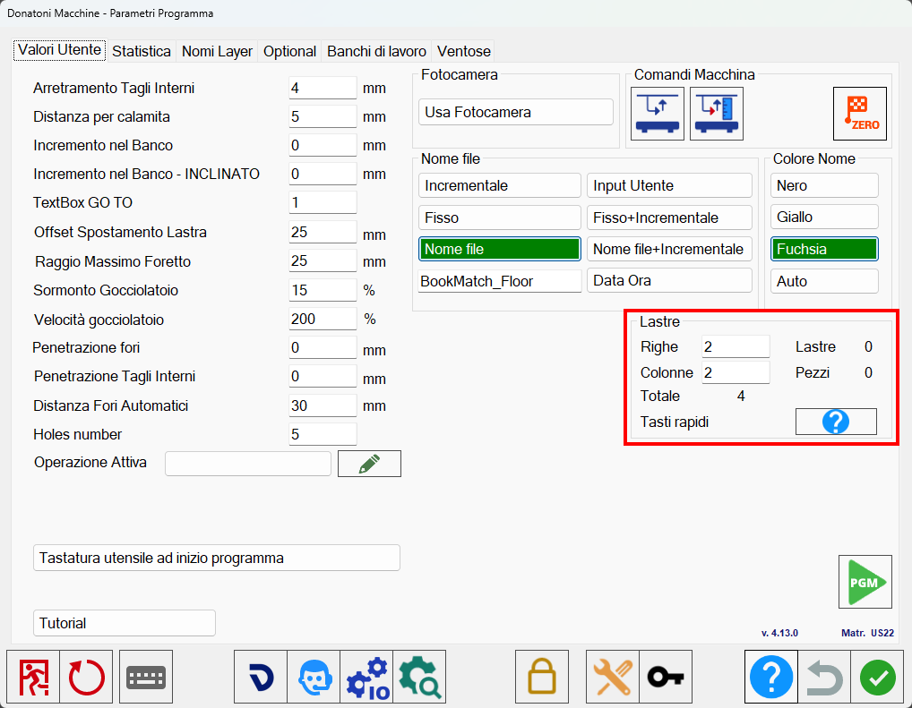
Righe | L’operatore può modificare il numero di righe del progetto corrente. |
Colonne | L’operatore può modificare il numero di colonne del progetto corrente. |
Totale | Numero totale di zone che compongono il progetto corrente. |
Lastre | Numero di lastre inserite nel progetto corrente. |
Pezzi | Numero di pezzi inseriti all’interno del progetto corrente. |
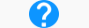 | Tasti rapidi |
Scorciatoie da tastiera
Per il Project Match sono disponibili dei comandi da tastiera che consentono di svolgere facilmente azioni di routine, utili per semplificare il lavoro in ufficio.
/0.02.png)
Zoom su progetto | Allarga la visuale sull’intero progetto. |
Zoom su zona | Restringe la visuale sulla zona di lavoro selezionata. |
Modalità pan | Permette di muovere la visuale attraverso l’interazione con lo schermo. |
Naviga tra le zone | Permette di cambiare la zona selezionata utilizzando i tasti. |
Muovi pezzo | Muove il pezzo selezionato nelle quattro direzioni. |
Ruota pezzo | Ruota il pezzo selezionato rispettivamente in senso antiorario ed orario. |
Ruota pezzo di _90 | Ruota il pezzo di 90 gradi in senso orario. |
Seleziona tutto | Se una zona di lavoro è selezionata, questo comando seleziona tutti i pezzi al suo interno. |
Attiva selezione multipla | Attiva la selezione multipla di pezzi/zone di lavoro. |
Annulla | Annulla l’ultima operazione eseguita. |
Copia lastra | Copia la lastra all’interno della zona di lavoro selezionata. |
Taglia lastra | Taglia la lastra all’interno della zona di lavoro selezionata. |
Incolla lastra | Incolla la lastra all’interno della zona di lavoro selezionata. |
Deseleziona | Permette di deselezionare tutti i pezzi/zone di lavoro. |
Conferma perimetro o foto | Da usare per confermare il perimetro/foto |
Selezione successiva | Seleziona il successivo pezzo all’interno della zona di lavoro selezionato. |
Calamita on/off | Attiva/disattiva la calamita dei pezzi. |
Comandi rapidi
Con il pulsante destro del mouse è possibile accedere alla finestra dei comandi rapidi.
Le funzionalità proposte cambiano se si preme dentro una zona di lavoro oppure all’esterno di tutte.
Comandi progetto
/0.22.png)
Salva lavorazioni | |
Report | |
/0.29.png) | Nesting |
Comandi zona di lavoro
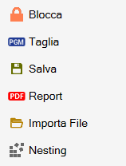
Blocca/Sblocca | |
Taglia | |
Salva | |
Report | |
/0.30.png) | Importa file |
| Nesting |
Nesting
Attivando la funzione di Nesting su tutto il progetto, vengono rese disponibili due modalità.
/0.33.png)
Inserisci i pezzi nelle lastre correnti | Inserisce i pezzi sulle lastre già presenti nel progetto, in modo da ottimizzare lo spazio disponibile |
Inserisci lastre e pezzi fino ad esaurimento | Vengono create lastre su cui applicare il Nesting fino a quando non vengono esauriti tutti i pezzi della lista. |
Per usare il Nesting fino ad esaurimento pezzi è necessario creare un perimetro per dare indicazione al programma delle dimensioni delle lastre che verranno utilizzate.
Verranno create lastre della stessa dimensione fino a che tutti i pezzi dell’elenco non saranno inseriti con il Nesting.
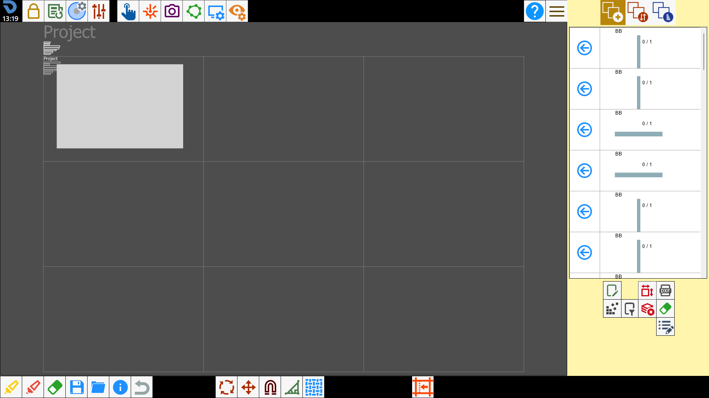
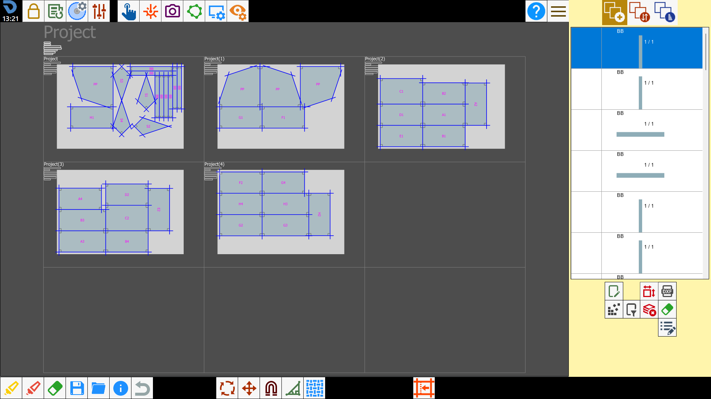
Report
Salva un report in formato PDF nella cartella dedicata progetto/zona di lavoro corrente.
Anteprima
In questa finestra è possibile vendere una rappresentazione complessiva del progetto in tempo reale.
È possibile inserire i pezzi all’interno della zona di lavoro selezionata premendo al loro interno sull’anteprima.
Inoltre, trascinando lo sfondo di un pezzo, l’operatore può cambiare la posizione del pezzo sul banco.
Pulsanti
A sinistra si trovano questi pulsanti.
/2.02.png) | Muovi pezzi |
/2.03.png) | Muovi visuale |
A destra si trovano questi pulsanti.
Apri render | |
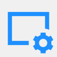 | Personalizza anteprima |
Ripristino posizione pezzi | |
Ripristino configurazione progetto | |
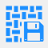 | Salva render |
Pianificazione di un progetto
Creare un nuovo progetto
L’operatore crea un nuovo progetto indicandone il nome, il numero di righe e colonne che lo compongono, ricordando che ogni cella equivale ad una lastra, e le dimensioni per le celle. Una volta confermato questa sarà la schermata:
/0.35.png)
Aggiungere le lastre
Dopodichè inserire le lastre nelle zone di lavoro. Per fare ciò selezionare una zona, caricare una foto da file, e scegliere il perimetro.
/0.36.png)
Importare i pezzi
A questo punto, importare i pezzi che si desidera tagliare. Si possono caricare sia file DXF che pezzi standard. Non c'è limite al numero di file caricabili.
/0.37.png)
Aprire anteprima
Quando sono presenti dei pezzi all’interno della lista, si può aprire la finestra con l’anteprima del progetto.
Questa mostrerà tutti i pezzi che sono stati importati.
/0.38.png)
Inserire i pezzi nelle lastre
Per inserire i pezzi all’interno delle lastre, utilizzare il classico metodo tramite la lista dei pezzi, oppure selezionare all’interno delle aree dei pezzi che si vedono nell’anteprima.
Verranno quindi inseriti sulla lastra della zona di lavoro selezionata.
Trascinando uno dei pezzi dall’anteprima, il pezzo si sposterà anche sulla lastra in modo da poter scegliere la parte migliore della lastra per far coincidere le venature tra i vari pezzi. Si può fare anche il contrario, cioè trascinare il pezzo dalla lastra e vedere dall’anteprima se le venatura coincidono o meno in base a dove viene spostato.
/0.39.png)
/0.40.png)